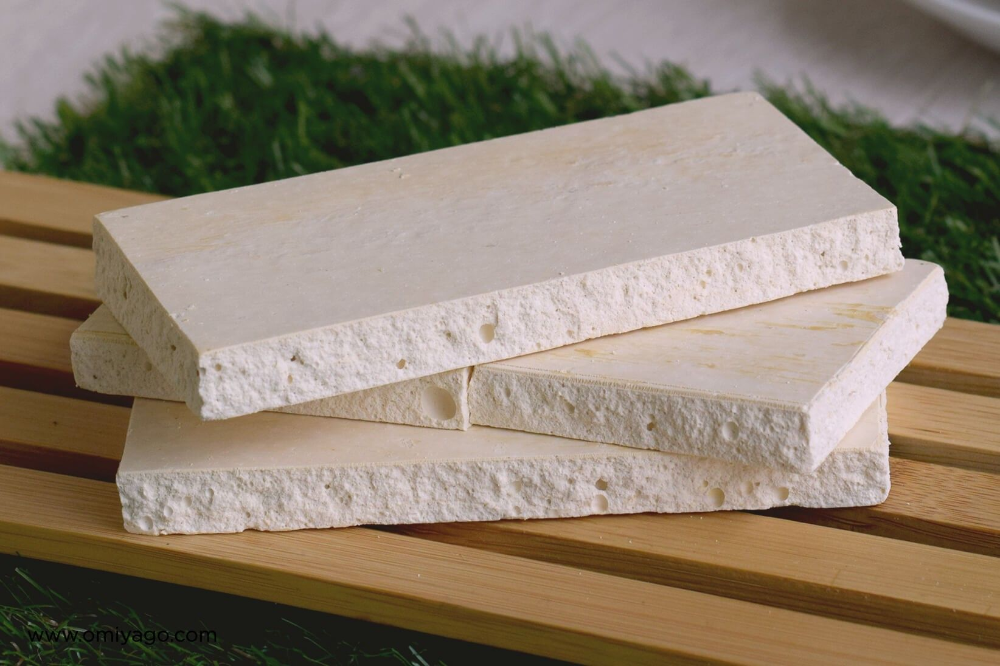
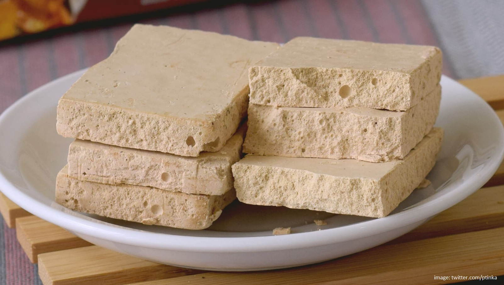
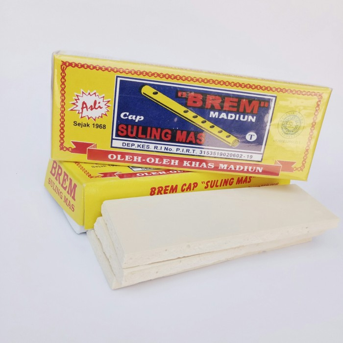

Share :
Brem adalah makanan yang berasal dari sari ketan yang dimasak dan dikeringkan, merupakan hasil dari fermentasi ketan hitam yang diambil sarinya saja yang kemudian diendapkan dalam waktu sekitar sehari semalam. Sensasi makanan ini muncul ketika makanan dimasukkan ke dalam mulut akan langsung mencair dan lenyap meninggalkan rasa 'semriwing' di lidah.
Brem yang paling dikenal adalah brem madiun yang berwarna kekuningan, berbentuk balok, dan memiliki rasa asam manis. Brem dibuat dari bahan dasar air tape ketan yang difermentasi, kemudian diendapkan selama sehari semalam.
Ada sebagian orang yang kurang menyukai brem karena mengandung alkohol akibat proses fermentasi tadi. Tapi tentu saja kandungan alkohol pada brem tidak sama dengan kandungan alkohol pada minuman keras. Makan brem tidak membuat mabuk. Justru kadar alkohol rendah pada brem bisa berdampak baik pada kesehatan karena dapat menaikkan kadar hormon yang diyakini dapat membantu arteri darah.
Brem Madiun diyakini lahir di dua desa, yaitu Desa Kaliabu di Kecamatan Mejayan dan Desa Bancong Kecamatan Wonoasri. Dua desa tersebut berdekatan dan berada di wilayah Kabupaten Madiun. Brem Madiun sudah ada sejak masa penjajahan Belanda dan dianggap sebagai makanan ndeso tetapi cukup mewah pada masa itu. Pasalnya, orang-orang desa lebih memilih makan nasi atau makanan berkarbohidrat daripada makan brem yang sama sekali tidak mengenyangkan. Sehingga brem hanya tersedia di rumah-rumah orang berada.
Asal nama 'brem' pun memiliki banyak versi, salah satunya karena proses pengeraman yang dilakukan selama berhari-hari. Istilah peram dalam bahasa Jawa terdengar seperti 'prem' dan jadilah nama brem. Resep pembuatan brem juga diturunkan dari satu generasi ke generasi lainnya.
Untuk membuat brem diperlukan proses yang cukup panjang. Bahan bakunya berupa beras ketan putih, ragi tape, soda kue, dan air secukupnya. Beras ketan yang telah direndam semalam kemudian diolah menjadi tape ketan dan disimpan selama 7 hari untuk proses fermentasi. Setelah proses fermentasi selesai, tape kemudian disaring atau dipres untuk mendapatkan air sarinya. Air sari tersebut direbus sampai mengental dan dimasukkan ke dalam wadah besar. Adonan tersebut kemudian ditambahkan soda kue dan diaduk hingga berwarna putih hingga bertekstur seperti pasta.
Proses pun berlanjut dengan memasukkan adonan ke dalam cetakan brem dan meratakan permukaannya. Setelah itu disimpan sehari semalam (bisa lebih) hingga adonan memadat dan siap untuk dipotong atau disajikan.
Air Terjun Seweru terletak di Dusun Seweru, Desa Kare, Kecamatan Kare, Kabupaten Madiun....
Baca lebih lanjut...
Air Terjun Krecekan Denu berada di Dusun Gilingan, Desa Kepel, Kecamatan Kare, Kabupaten M....
Baca lebih lanjut...
Tempat wisata di Madiun yang pertama bisa ditemukan lima belas kilometer dari Kota Madiun, atau tepatnya...
Baca lebih lanjut...
Hutan Pinus Nongko Ijo berada di Desa Kare, Kecamatan Kare, Madiun, Jawa Timur. Tempat ini menyuguhkan pepohonan pinus yang tinggi...
Baca lebih lanjut...